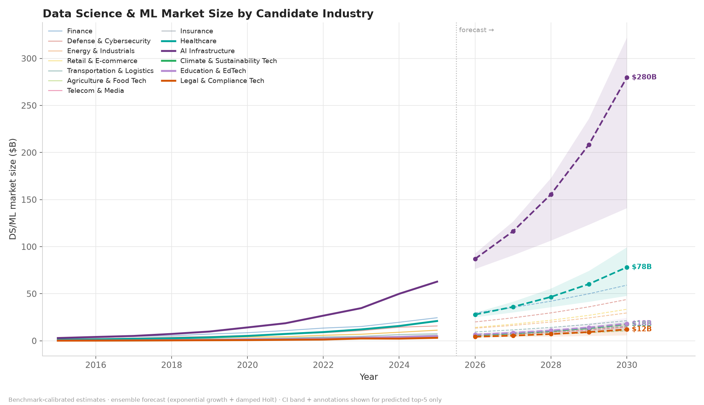
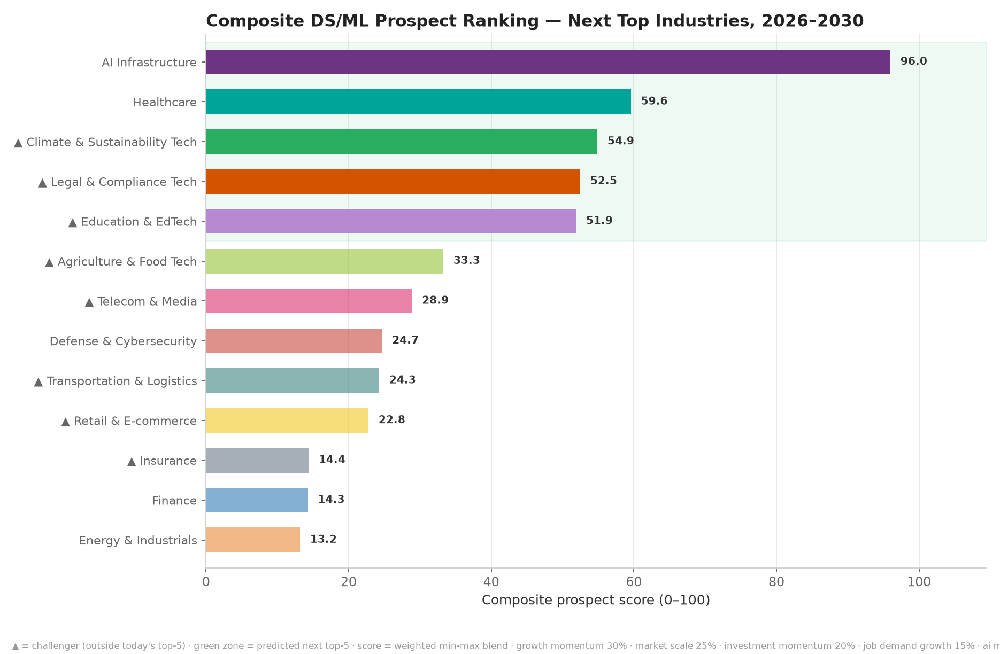
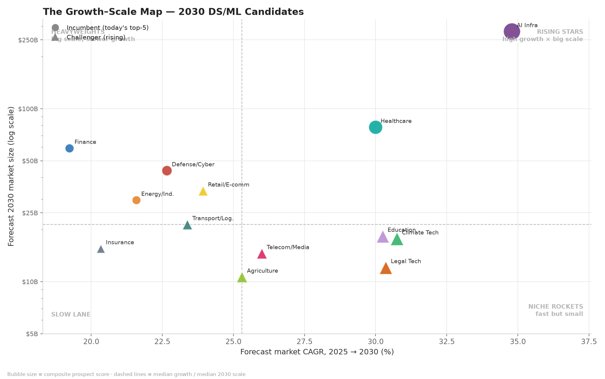
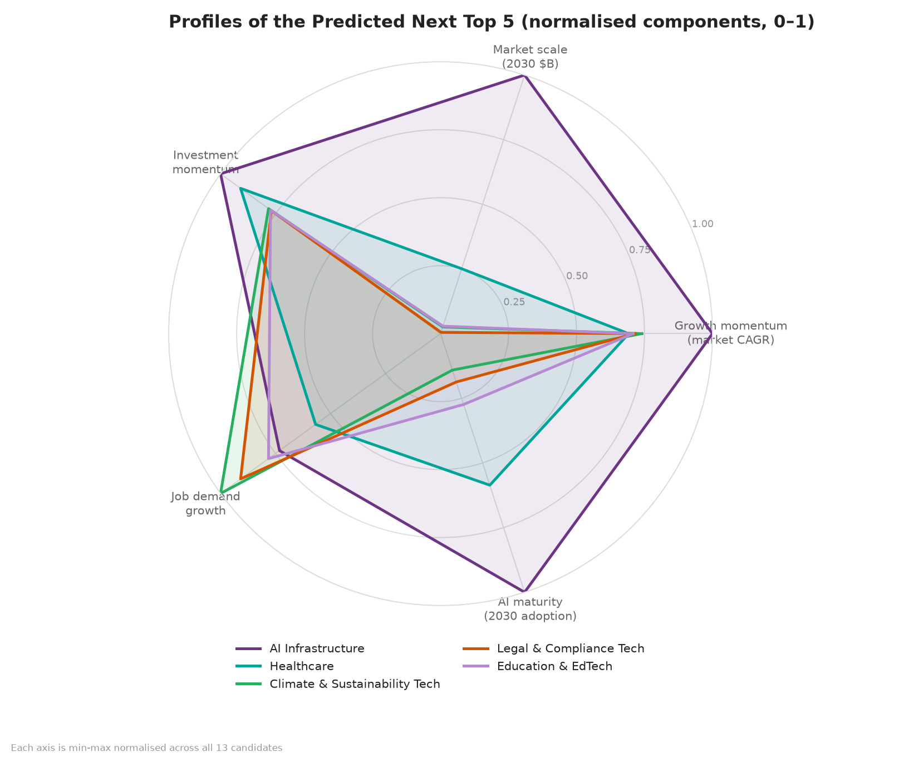
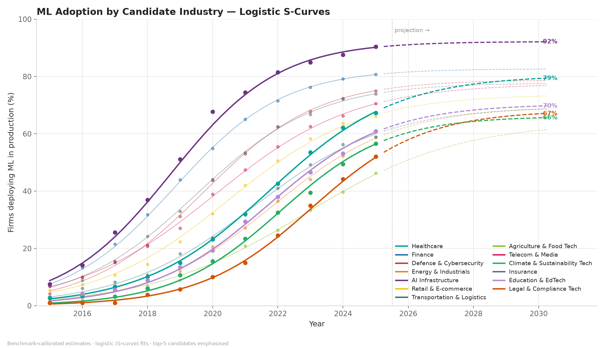
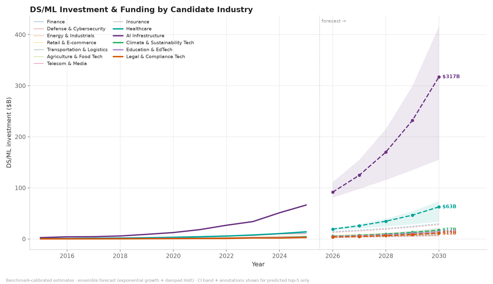
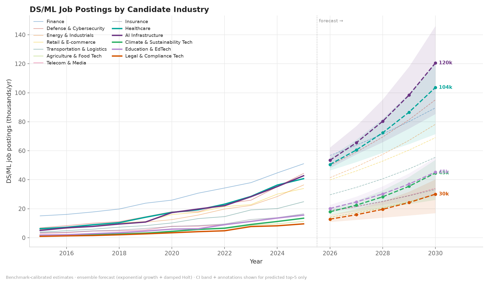

Beyond today's top-5: a 2026–2030 composite ranking of 13 candidate industries — 5 incumbents vs 8 rising challengers — forecast with a backtest-weighted ensemble and scored on a transparent prospect index.
Composite prospect index: growth 30% · scale 25% · investment 20% · jobs 15% · adoption 10% (min-max normalised across all 13 candidates).
All charts generated by the pipeline — history solid, ensemble forecasts dashed with 90% bootstrap bands.







A backtest-weighted ensemble of log-linear OLS regression (compound-growth model) and damped Holt exponential smoothing (ETS(A,Ad,N)-style) forecasts each candidate to 2030, with 90% residual-bootstrap prediction intervals; bounded adoption rates use logistic (Pearl–Reed) S-curves. Candidates are ranked with a min-max composite indicator (OECD/JRC methodology). Weights are learned on a 3-year holdout, and every component is published so the ranking can be re-weighted and re-run: pip install -r requirements.txt && python main.py.